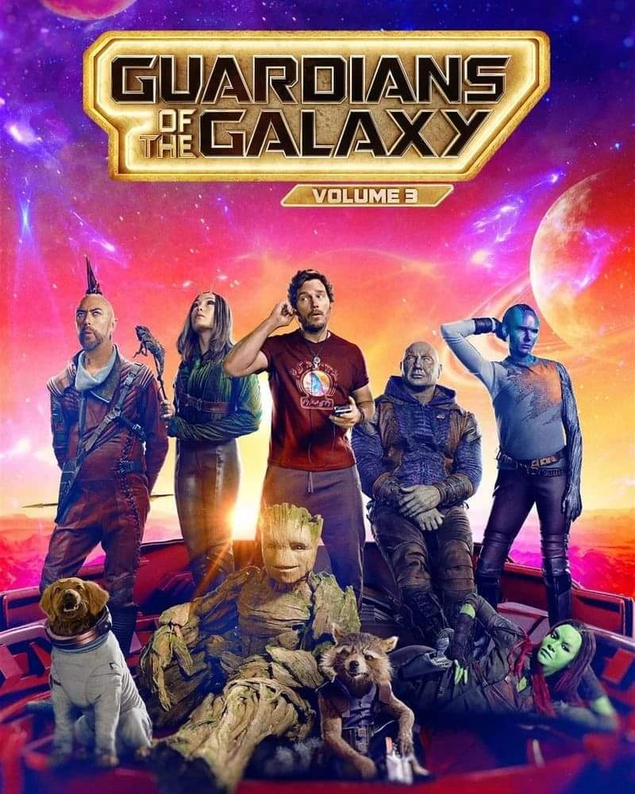
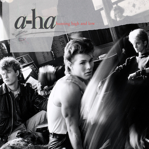

Películas Favoritas Avatar James Cameron (Saga) Ver en IMDb ↗ La noche del demonio James Wan (Saga) Ver en IMDb ↗  Guardianes de la Galaxia James Gunn (Trilogía) Ver en IMDb ↗
Discos Favoritos Violator Depeche Mode (1990) Escuchar en Spotify ↗ Una Mattina Ludovico Einaudi (2004) Escuchar en Spotify ↗  Hunting High and Low a-ha (1985) Escuchar en Spotify ↗